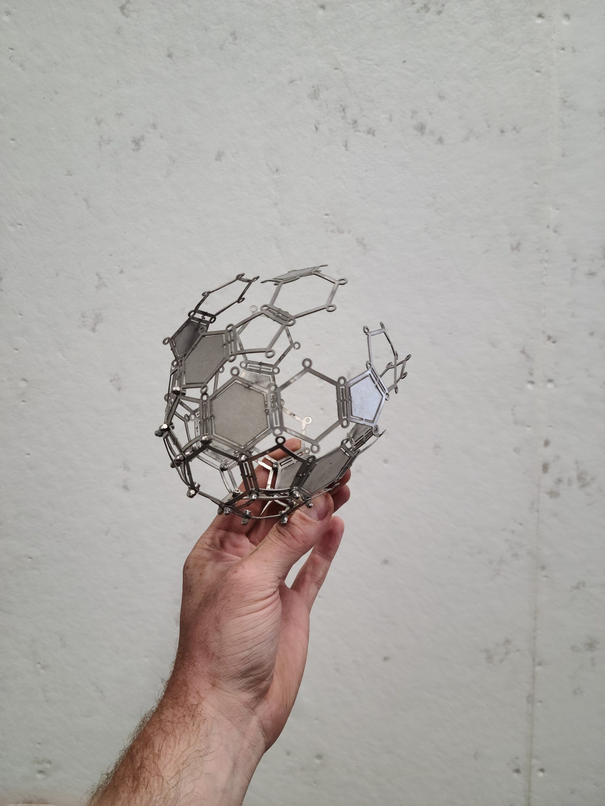
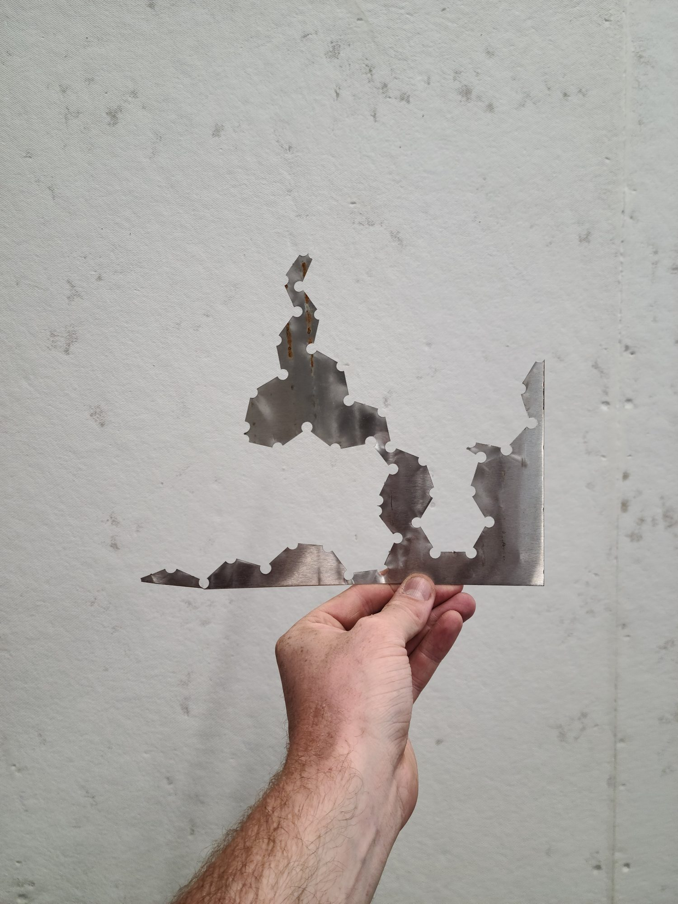
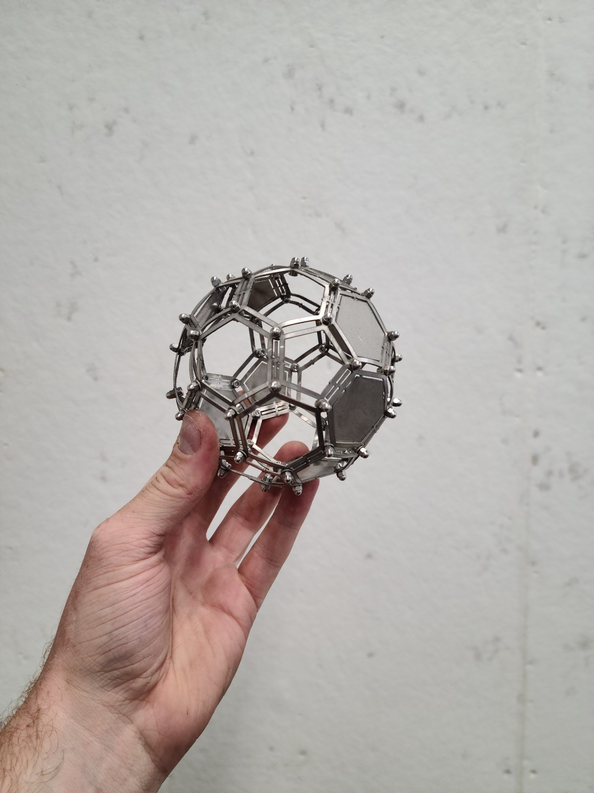
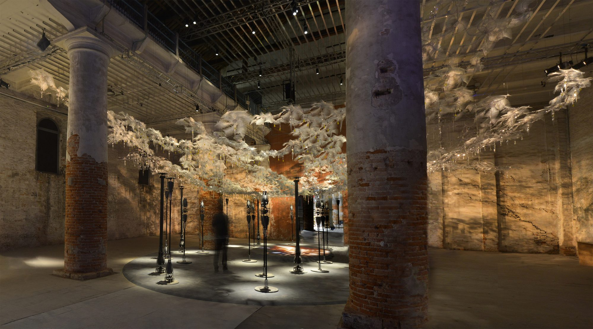
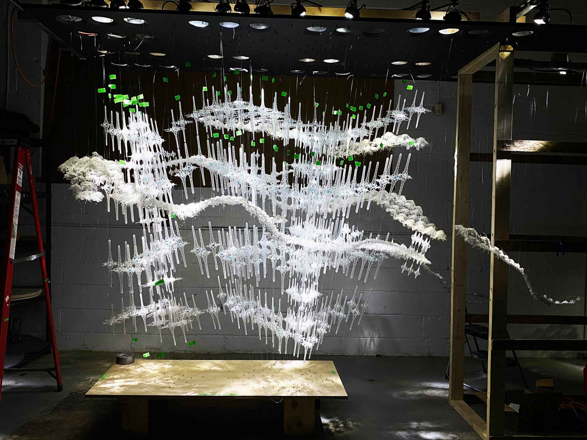
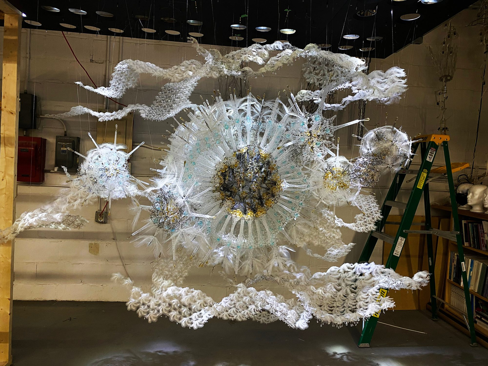
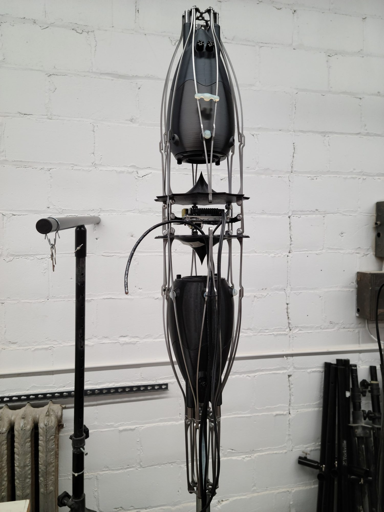

living architecture systems group/ philip beesley studio inc.
I occupied the position of Systems Designer/Production Manager at LASG/PBSI. In this role I worked with a team of designers on research and material exploration for architectural sculpture installations. I utilized Rhinocerous to produce digital models and orthographic drawing sets, as well as using digital prototyping tools such as laser cutters, water-jet cutters, and 3D printers to produce prototypes and models, and final sculptural elements.
PBSI/LASG produced an installation for the 2021 Venice Architecture Biennale, which featured an array of 3D printed speaker shells and laser-cut sculptural elements. I worked on the prototyping and printing of the speaker shells as well as waterjet cutting and laser cutting of sculptural elements. I was the primary operator of the water-jet machine, which entails rigorous maintenance and troubleshooting to achieve accuracy in models.
I was a member of the design, production, and installation team for the sculptures (right) installed at the San Jose International Airport. In this I managed laser cutting prototypes in the design process, as well as large scale laser-cutting production management for the project. I built a large portion of the sculpture, and was part of a 4 person team installing the sculpture over 8 days.
The metal pieces I’m holding are a material and form exploration of water-jet cutting a single sheet of steel to a truncated icosahedron. I used existing PBSI/LASG design logic to make a 5 piece folded sphere and designed the connection points to apply to a folding assembly with miniature screws and cap nuts.






